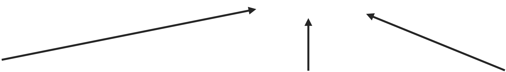

Arnold Kalmbach, Yewon Lee
CSC477 Tutorial #2
Sept 28, 2022
\[AX = I \iff X = A^{-1}\]
\[Q^T Q = Q Q^T = I\]
\[\begin{align} & Q = [q_1, q_2, \ldots, q_n] \\ & q_i^T q_j = \begin{cases} 1 & i = j \\ 0 & i \neq j \end{cases} \end{align}\]
\[\|v\|_{p} = \left(\sum_{i=1}^{n}|v_{i}|^{p}\right)^{1/p}\]
Idea: Fit a line to the sample points.
This is an over-determined system
\[\hat{x} = \underset{x}{\arg \min} \left( \sum_{i=1}^{n} (b_i - a_i x)^2 \right)^{1/2}\]
\[\hat{x} = \arg \min_{x} \|b - Ax\|_{2}^{2}\]
f(x)
Very general formulation: \(\hat{x} = \underset{x}{\arg \min} \|b - h_x(A)\|_{2}^{2}\)
Most common options (not covered much in this course):
Can use Linear or nonlinear least squares to set up all kinds of modelling problems as optimization problems.
\[\begin{align} & \nabla f(\hat{x}) = 2A^{T} (A\hat{x} - b) = 0 \\ & (A^{T}A)\hat{x} = A^{T}b \\ & \colorbox{yellow}{$\hat{x} = (A^T A)^{-1} A^T b = A^\dagger b$} \end{align}\]
To calculate with numpy:
numpy.linalg.pinv(A)x_hat = numpy.linalg.lstsq(A, b)\[\hat{x} = (A^T A)^{-1} A^T b = A^\dagger b\]
Computing \((A^T A)^{-1}\) by Gaussian Elimination is numerically unstable and slow!
We can do better if we decompose A
\[\LARGE{A = U\Sigma V^T}\]

Orthogonal
Diagonal
(Squared eigenvalues)
Orthogonal
\(\Sigma^{\dagger}\) = Reciprocal of each diagonal entry, transpose
Very useful fact: \[A^{T}A=V\Sigma^{\dagger}U^{T}U\Sigma V^{T}=V(\Sigma^{\dagger}\Sigma)V^{T}\]
\[\begin{array}{cccc} \color{red}{\scriptsize{\text{n×d}}} & & \color{red}{\scriptsize{\text{n×n}}} & \color{red}{\scriptsize{\text{n×d}}} & \color{red}{\scriptsize{\text{d×d}}} \\ \Large{A} & = & \Large{U} & \Large{\Sigma} & \Large{V^T} \end{array}\]
\(\quad \Sigma\) has diagonal elements
\(\qquad \sigma_{1} \ge \sigma_{2} \ge \dots \ge \sigma_{k} > \sigma_{k+1} = \sigma_{k+2} = \dots = 0\)
\(\quad\) Where \(\sigma_i\) are the square root of the eigenvalues of \(A^TA\) and \(k=\text{rank}(A)\)
\[A = \begin{bmatrix} 1 & 0 \end{bmatrix}\]
\[A^T A = \begin{bmatrix} 1 \\ 0 \end{bmatrix} \begin{bmatrix} 1 & 0 \end{bmatrix} = \begin{bmatrix} 1 & 0 \\ 0 & 0 \end{bmatrix}\]
\[\det(A^T A - \lambda I) = 0 \Rightarrow \lambda_1 = 1, \operatorname{rank}(A) = 1\]
\[\Sigma = \begin{bmatrix} 1 & 0 \end{bmatrix}\]
\[\begin{array}{cccc} \color{red}{\scriptsize{\text{n×d}}} & & \color{red}{\scriptsize{\text{n×n}}} & \color{red}{\scriptsize{\text{n×d}}} & \color{red}{\scriptsize{\text{d×d}}} \\ \Large{A} & = & \Large{U} & \Large{\Sigma} & \Large{V^T} \end{array}\]
\[V = \begin{bmatrix} \underbrace{v_1 \; v_2 \; \ldots \; v_k} & \underbrace{v_{k+1} \; \ldots \; v_d} \end{bmatrix}\]
Normalized eigenvectors of \(A^T A\)
Obtained from \(A^T Av_j = 0\) such that orthogonality of V is satisfied
\[(A^T A - \lambda_1 I)v_1 = 0, \lambda_1 = 1\]
\[\begin{bmatrix} 0 & 0 \\ 0 & -1 \end{bmatrix} v_1 = 0\]
\[v_1 = \begin{bmatrix} 1 \\ 0 \end{bmatrix}\]
\[\begin{align} A^T A v_2 = 0 \\ \begin{bmatrix} 1 & 0 \\ 0 & 0 \end{bmatrix} v_2 = 0 \\ v_1 \cdot v_2 = 0 \\ v_2 = \begin{bmatrix} 0 \\ 1 \end{bmatrix} \end{align}\]
\[\Rightarrow V=\begin{bmatrix}1&0\\ 0&1\end{bmatrix}\]
\[\begin{array}{cccc} \color{red}{\scriptsize{\text{n×d}}} & & \color{red}{\scriptsize{\text{n×n}}} & \color{red}{\scriptsize{\text{n×d}}} & \color{red}{\scriptsize{\text{d×d}}} \\ \Large{A} & = & \Large{U} & \Large{\Sigma} & \Large{V^T} \end{array}\]
\[V = \begin{bmatrix} \underbrace{u_1 \; u_2 \; \ldots \; u_k} & \underbrace{u_{k+1} \; \ldots \; u_n} \end{bmatrix}\]
Normalized eigenvectors of \(AA^T\)
Obtained from
\(AA^Tu_j = 0\)
\[AA^{T}=\begin{bmatrix}1 & 0\end{bmatrix}\begin{bmatrix}1 \\0\end{bmatrix}=1\]
\[\det(AA^{T} - \lambda I) = 0 \Rightarrow \lambda_{1} = 1\]
\[AA^{T}u_{1} = \lambda_{1}u_{1} \iff u_{1} = u_{1}\]
\[u_{1} = 1\]
\[U = 1\]
\[\Large{A = U \Sigma V^T}\]
If we can compute \(A^{\dagger}=(A^{T}A)^{-1}A^{T}\) stably, we can solve LS problems.
Recall: \(A^{T}A=V(\Sigma^{\dagger}\Sigma)V^{T}\)
So \(A^{\dagger}=V\Sigma^{\dagger}U^{T}\)
To calculate with numpy
U,S,V = numpy.linalg.svd(A)